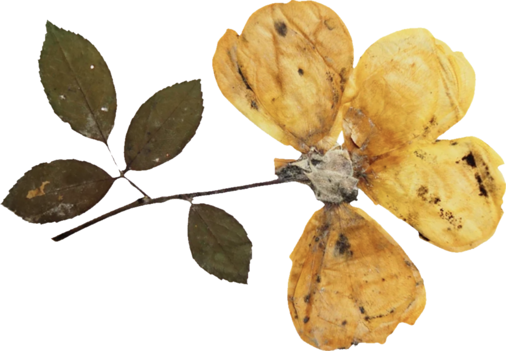
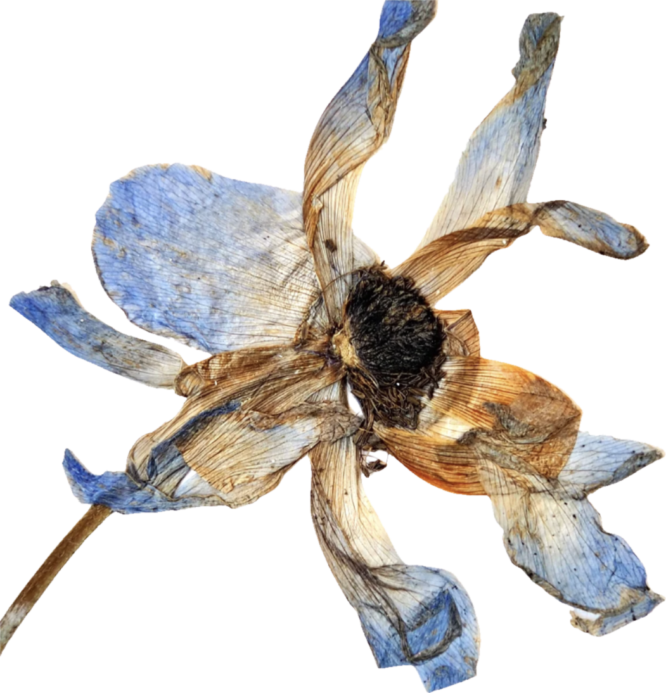
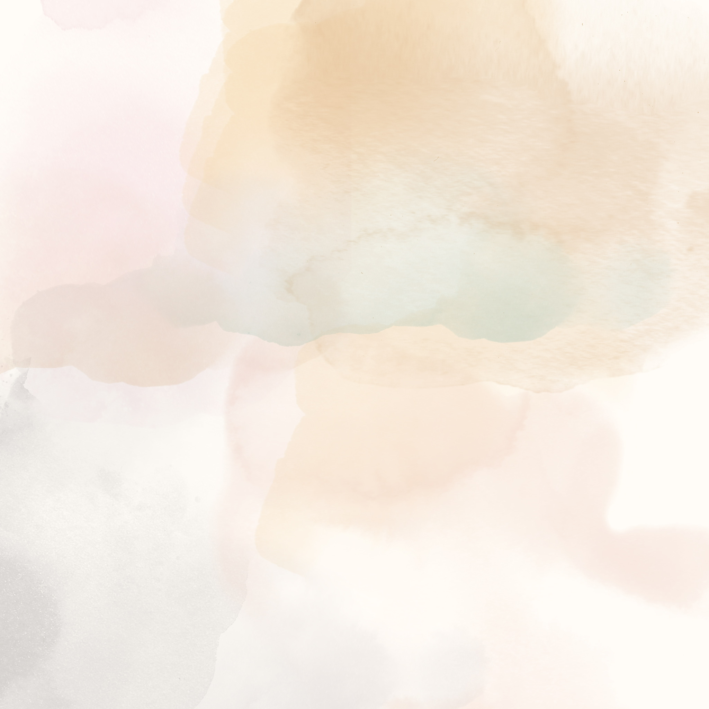
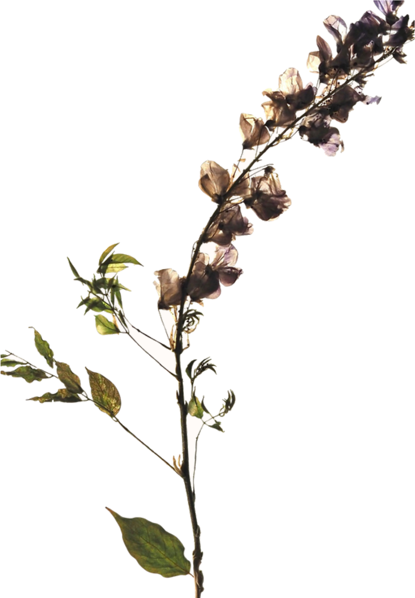
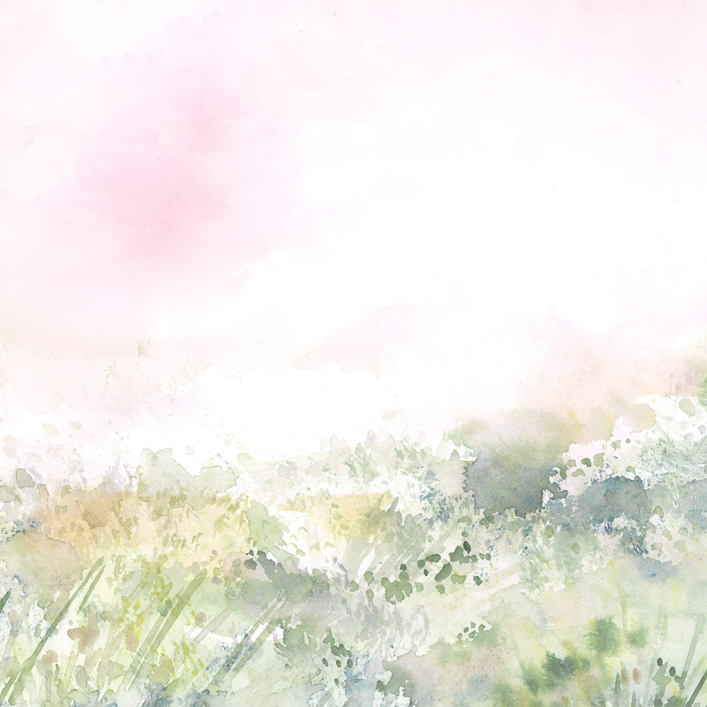
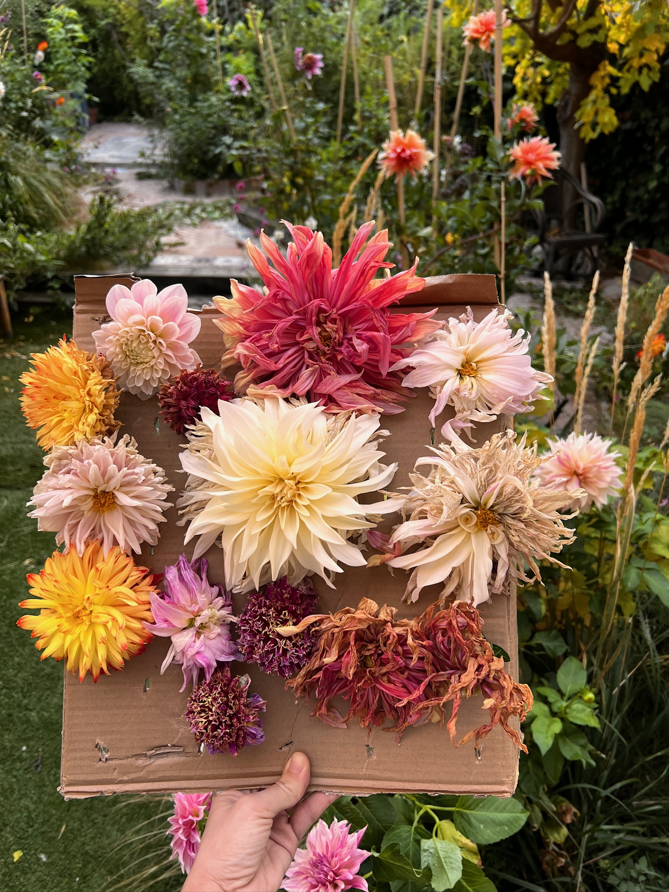
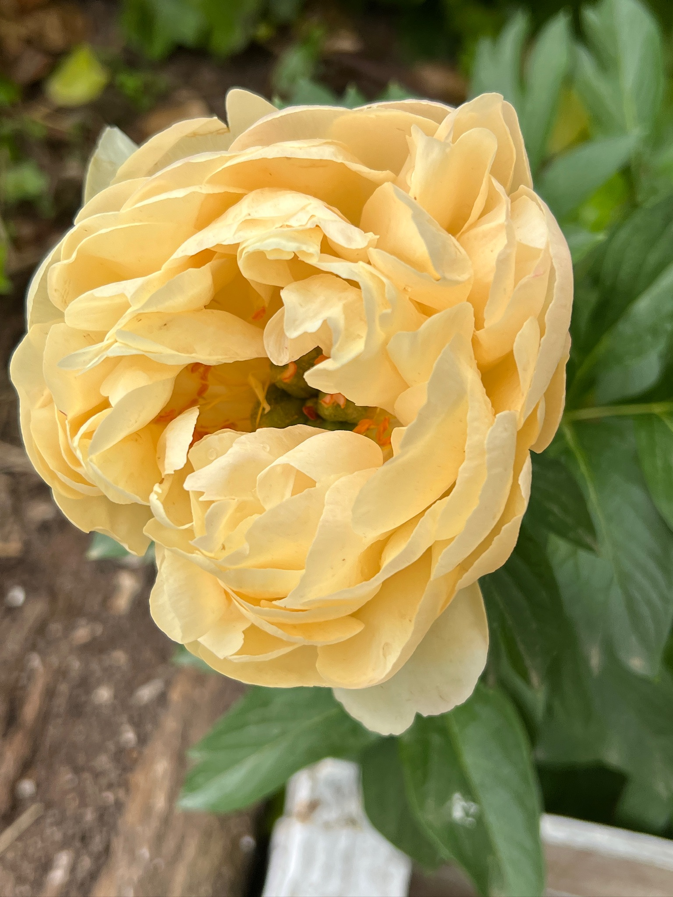
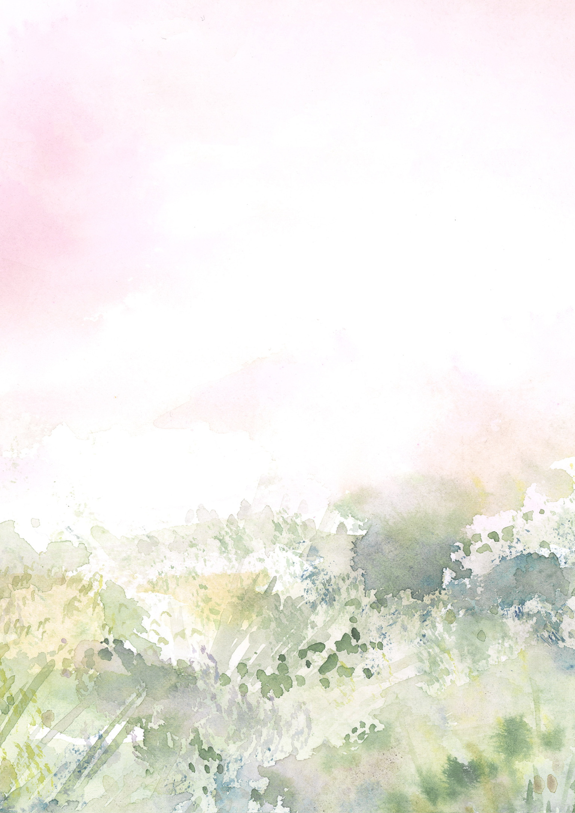
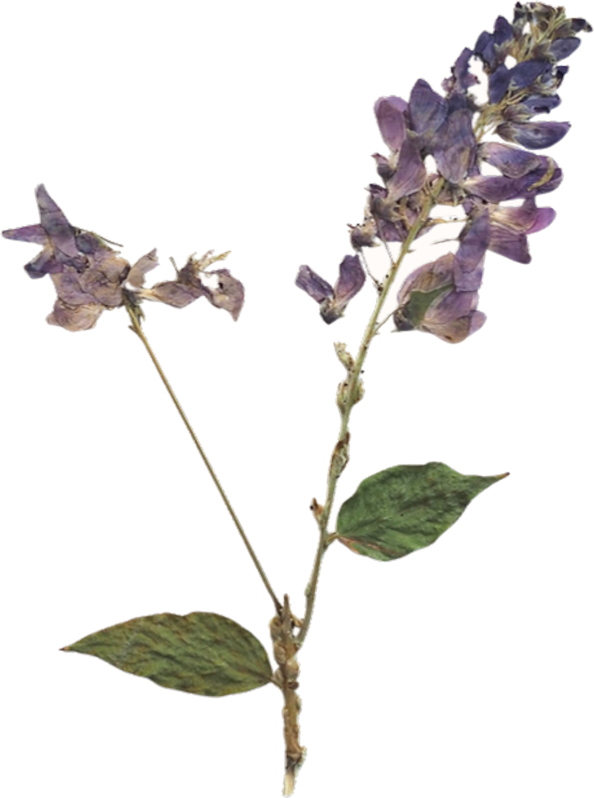
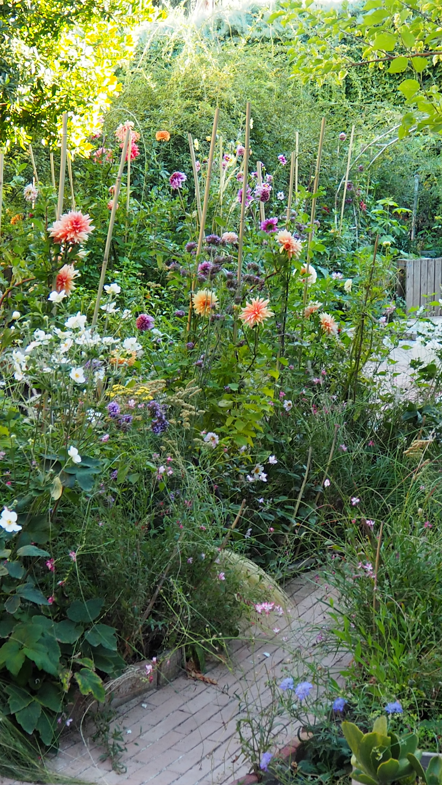

✷soy
De niña guardaba pétalos entre las páginas de los libros. Nunca dejé de hacerlo: solo aprendí a compartirlo.


✷una de esas películas…

…y sale galopando hacia el ocaso
Me encantan esas películas en las que preguntan:
—¿Qué prefieres primero, la buena o la mala noticia?
Aparece aquel hombre cepillando con cariño a su caballo —yo me imagino a Clint Eastwood—. Sin dejar de cepillarlo, dice:
—La buena noticia es que me siento totalmente libre, como cuando era niño.
Escupe su tabaco de mascar con una elegancia que hasta parece que ni estuviera escupiendo, y añade:
—La mala noticia es que he tenido que estar muchos años encarcelado para descubrirlo. Aunque no me arrepiento.
Entonces deja el cepillo, se coloca el sombrero, mira a cámara con esa mirada que te atraviesa hasta el alma y sale galopando hacia el ocaso.
Y después ¿qué? Se queda en una incógnita no resuelta. Y cuando una está en una época de su vida perdida, quiero que Clint me muestre su vida como un hombre libre. ¡Fu**k!, tengo curiosidad. ¿Qué haría realmente con su libertad? ¿Cómo viviría su vida?
Seguro que te preguntas si te has equivocado de web o de qué coj*nes hablo, porque esta introducción parece no tener ni pies ni cabeza…


✷ahora sí
Me llamo Gugui. Y, como en las películas, tengo una buena y una mala noticia.
Que, si no te cuento mi valía profesional, tendré que contarte mi historia. Y si esto ya te sonaba extraño y largo, puedes abandonar la página ahora mismo.
No voy a contarte mis logros, ni cuánta experiencia tengo, ni cuántos trabajos o proyectos he hecho, ni qué he estudiado. Porque nada de eso soy yo.



guardado


Desde niña
✿flores entre libros
Recolectaba flores, hojas, piedras, ramas, plumas… y todo lo guardaba en cajas, latas o carpetas, dentro de baúles y, sobre todo, en los libros. Al abrir una detrás de otra sentía la emoción pura de la sorpresa: «¿qué habré guardado aquí? ¡Porque no me acuerdo!». Me sentía libre, llena de curiosidad y sin ningún miedo.
Es como si esa niña que dejé olvidada me hubiera ido dejando pétalos a modo de miguitas de pan, para reconstruir las partes de mí que había perdido por el camino. Las piezas más preciadas seguían allí.

somos de la misma tribu
Eres una recolectora. O, como me gusta llamarnos, una Mujer Jardín.
Llevamos toda la vida guardando entre libros y cajitas hojas, flores y pedacitos de nuestra existencia, sin saber muy bien por qué, pero sabiendo que están ahí, esperándonos. He creado este lugar para todas las que sienten la llamada de esa niña guardada en un trastero. El rastro de tu vida.


Las raíces
✽entre grandes artistas
Me fascinaba. Era el Google de las que crecimos buscando palabras en la Larousse. Mi padre tenía colecciones de libros de grandes artistas, y era entre aquellas páginas donde guardaba mis tesoros más preciados.
Muchos de mis días en el campo quedaron grabados dentro de aquellos libros en forma de hojas secas, pétalos y flores. El porqué nunca me lo planteé: ha sido echando la vista atrás cuando el puzle ha encajado pieza por pieza.


✤descalzas, entre matorrales
¿De dónde vendrá ese instinto tan fuerte de conectar con la naturaleza, de recolectar, como si quisiera detener el tiempo y la belleza de un instante?
Me fascina imaginar a aquellas mujeres libres, descalzas, caminando sigilosamente entre los matorrales, escuchando los secretos de la naturaleza que recolectaban durante toda su vida. Formaban parte de una tribu, y tenían un papel importante como recolectoras para con su gente.
Hoy quizá esté visto como algo un poco de pordiosera: rebuscando tesoros en un contenedor de obra, o siempre con unas tijeras de podar en el coche, porque nunca se sabe cuándo hay que parar a cortar unas flores en la cuneta. Porque no puede resistirse.
Lo que de verdad me abruma es poner los pies en la tierra y caminar descalza. Ahí todos los instintos cobran sentido. Y suceden cosas mágicas.

❧casi todas las respuestas

crear con las manos
De niña —una vez más vuelvo a mi niñez, porque al final casi todas las respuestas las tiene una niña pequeña— todo era sencillo. Muy básico. Y las cosas más básicas son, a veces, las que no nos entran en la cabeza. Pero la esencia de todo quizá está ahí mismo.
Disfrutaba infinitamente en mis ratos de soledad, en el campo. Aquella conexión con Dios, con el Creador, con el juego, era el motor de mi creatividad. Lo que me hacía sentir viva. Pero siempre quise compartir ese modo de vibrar con otras. Buscaba una tribu que me permitiera ser como era, ser aceptada tal cual, que entendiera ese idioma silencioso en el que percibes si encajas.
Toda la vida la he estado buscando: como recolectora, a otras mujeres recolectoras. Al escucharlas, resuenan como campanas. Mujeres que una vez también quisieron encajar, pero cuyo molde era distinto. Y eso es lo bonito: cada molde es totalmente diferente, pero todos encajan con su propia forma.
Este es el porqué. Cuando creas, crear se convierte en una consecuencia, no en el objetivo. Cuando jugar y experimentar se vuelve la puerta de nuestro jardín secreto —ese lugar donde todo cobra sentido y sabemos quiénes somos y de dónde venimos—, es ahí donde una comunidad de mujeres puede florecer de formas que aún ni hemos imaginado.
Lo que digo no es fantasía ni es un sueño. Y si no, pregúntale a esa niña: está ahí mismo. Y después… viene la magia.

 el huerto
el huerto
El corazón de todo
❦todo orbita aquí
Todo este universo orbita alrededor del huerto floral. Es este pequeño ecosistema el que nos inspira, nos enseña y comparte su vida, sus estaciones, sus frutos y sus flores. Nos enseña a evolucionar, como las semillas que caen en la tierra, brotan y echan raíces.
Un ecosistema donde cada planta es única, donde comparten la tierra, los nutrientes y el agua, y donde precisamente por eso todas pueden crecer. Este es el principio de la comunidad.
✳con gratitud
Le estoy muy agradecida a mi madre por haber guardado las toneladas de cuadernos del colegio, los dibujos y las cartas de cuando era pequeña. Hace poco me dio una bolsa repleta de souvenirs del pasado y, entre fotos de la adolescencia, había tres o cuatro cuadernos de cuando tenía seis o siete años.
Llevo un tiempo mirándolos con detenimiento. No sabría describirte lo que se siente al reencontrarte con aquello, porque eso se vive: cuando una está buscando y, de pronto, encuentra… Se encuentra.
«Al igual que hicieron nuestras madres, nosotras también guardamos el rastro de nuestros hijos. Un día se lo devolveremos, para que, si quieren, puedan reencontrarse con aquellos niños que fueron.»
— Gugui

✳cartas,
De vez en cuando escribo despacio: lo que florece, lo que se prensa y los próximos talleres.